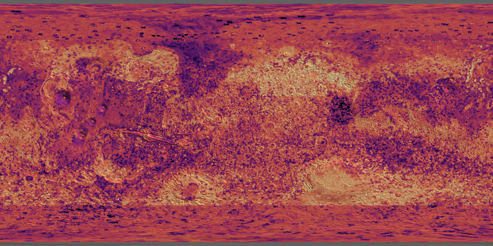
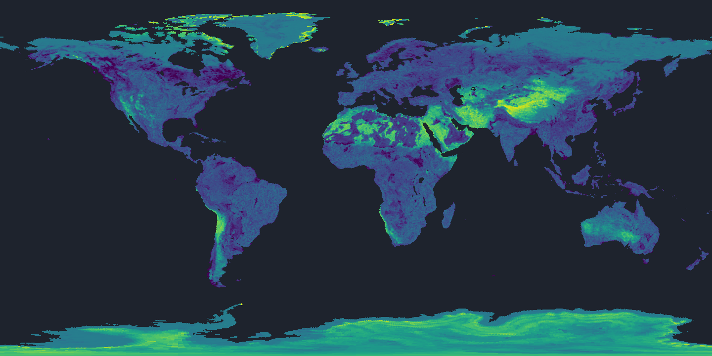

Mars to Earth twin finder
Click anywhere on Mars. Every one of 196,383 Mars places (59 km windows) was compared with every one of 224,195 Earth land places on terrain shape, albedo, surface temperature, shallow ground ice and vegetation. The table lists the closest Earth places and how well each factor matches.
Mars: pick a place

analog gap: small large (no good Earth stand-in)
Earth: best twins of that place

Mars-likeness: low high · numbered dots are the twins
Earth twins
| # | Place (lat, lon) | Match | Per factor |
|---|
Order is by the hub-corrected score, so a twin with a slightly lower match can rank higher when it is less close to everything else on Mars.
Factor by factor: Mars against twin
| Factor | Mars | Earth |
|---|
Day-night range is shown, not searched: Mars swings far more than any Earth surface (thin air, low thermal inertia).